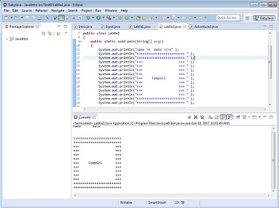
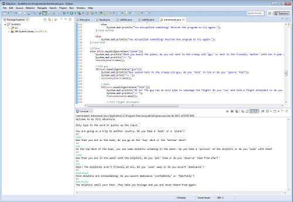
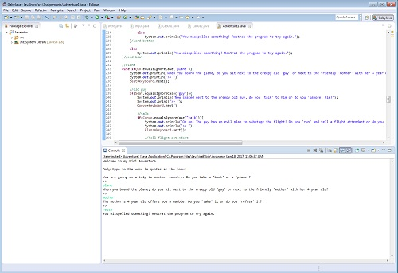

Java Labs Unit 0

Descriptions:
The first lab we did in Unit 0 of Java was printing a box/pattern using ascii characters. The second lab we did was very similar, except we had to include a word inside the box. The last lab we did was the input lab, where we had to write a program that would take integer and decimal inputs (doubles, floats, shorts) from the user and print them out accordingly.
Concepts Learned:
- How to write a print statement.
- How to create a new line in a print staement.
- How to receive user inputs using input=keyboard.next();
- How to use user inputs to start the next part of the program.
Mini Adventure Project (Java Final)


Description:
For the Java final, we had to create a mini adventure that would take the user through a story based on their inputs. The story had to have multiple different outcomes, as well as various different story lines that changed based on the user's inputs. We also had to insure that, should the user misspell something, the program would know and "react" accordingly. To recieve full credit, the program had to ask the user at least four different questions based on their decisions and have them recieve either a good or bad outcome.